fristaende-aktorer.se drivs inte av Arbetsförmedlingen och du ansvarar själv för att
säkerställa att all information är korrekt
Bakgrund
Denna sida är en tillfällig lösning som skapats utifrån upplevda brister i de användarstöd som finns
tillgängliga på
Arbetsförmedlingens hemsida
All information är sådant som finns tillgängligt på arbetsformedlingen.se och är i möjligaste mån
oredigerad.
Ibland kan text och/eller bild ha modifierats från originalet. Syftet har då varit att exempelvis
rätta stavfel, felaktiga innehållsförteckningar, beskära bilder etc.
Även om målet är att informationen ska vara identisk med den som erbjuds av Arbetsförmedlingen, är
det i slutändan du själv som ytterst ansvarar för att det du gör är korrekt. fristaende-aktorer.se
tar inget ansvar för eventuella konsekvenser som orsakats av felaktig eller gammal information.
Grundförutsättningar
Målet är att tillhandahålla:
En plats för alla användarstöd - Du ska inte behöva lägga tid på att hitta stödet
En möjlighet att läsa användarstöden på mobilen, plattan eller datorn - Du ska inte
behöva sitta
vid datorn för att snabbt och smidig kunna hitta svar.
En enhetlig struktur för alla användarstöd - Du ska inte behöva "lära dig" olika stöd
för olika
tjänster
Sidan kommer inte:
Vara vinstdrivande
Innehålla annonsering
Genomföra felsökning av KA eller MSFA
Ta emot felanmälningar av KA eller MSFA
Genomföra utbildningar av KA eller MSFA
Om mig
Jag som driver sidan arbetar i dagsläget hos Servicedesk på Arbetsförmedlingen, inriktat mot
arbetsförmedlares och leverantörers systemstöd.
Då sidan räknas potentiellt kan räknas som "bisyssla" innebär det vissa krav och begränsningar på
innehåll och omfattning.
Det innebär även att oannonserade förändringar kan komma att ske
om oklarheter eller nya bedömningar blir aktuella.
/ Alexander
Uppdateringar i användarstödet
21-11-23
Ändringar:
Deltagarinformation - Deltagare & tjänst ny info om avbrott
Nya avsnitt:
Rätta fel i inskickad avvikelserapport frånvaro
Rätta fel i inskickad avvikelserapport avvikelse
21-11-30
Ändringar:
Export till Excel ny info om nivå
Nya avsnitt:
Informativ rapport
Slutredovisning
Se status för rapporter och redovisningar
21-12-01
Ändringar:
Slutredovisning steg 1 tillägg om obligatoriska fält
21-12-16
Ändringar:
Skapa informativ rapport tillägg om kontaktuppgifter
Nya avsnitt:
Se status för rapporter och redovisningar
Se motivering till ej godkänd slutredovisning - deltagarl...
Se motivering till ej godkänd slutredovisning - Rapporter
22-01-27
Ändringar:
Deltagare & tjänst - Genomförandereferens, avbrott och v...
Ny info om videolänk
22-02-28
Ändringar:
Se mina deltagare - Tillägg om att söka på genomförande
Du som är ansvarig behörighetsadministratör får en länk, via e-post, som går till inloggningssidan
för
”Mina sidor för fristående aktörer”.
Du loggar in genom att använda BankID/ Mobilt BankID och kan sedan lägga upp personalkonton för
medarbetare inom din organisation.
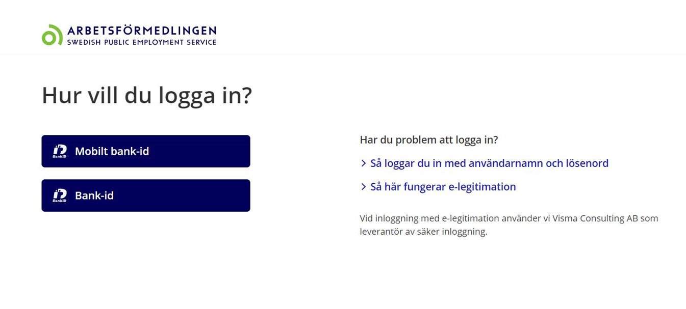
Skapa personalkonto
För att skapa personalkonton gå in under fliken ”Administration”.
Klicka sedan på ”Skapa personalkonto”.
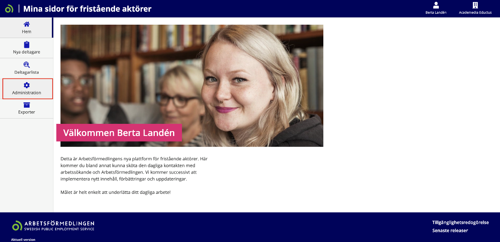
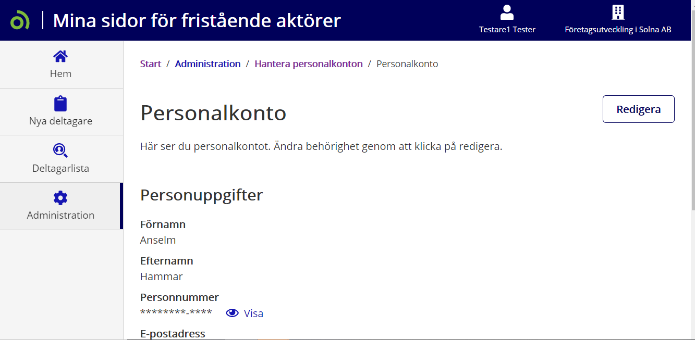
Bjud in användare
Fyll i e-postadresser till de personer du vill bjuda in som användare. Om du bjuder in flera
personer
samtidigt så separerar du e-postadresserna med kommatecken.
De inbjudna personerna får en inbjudningslänk med e-post. Efter att personen identifierat sig med
bank-ID skapas ett nytt personalkonto.
När personalkontot är skapat ser du det i personallistan. (Se nästa sida)
Det är först när personen gått in på länken och personalkontot har skapats som du kan lägga till
behörigheter för det kontot.
För att komma tillbaka till personallistan klicka på ”Tillbaka till personallistan”
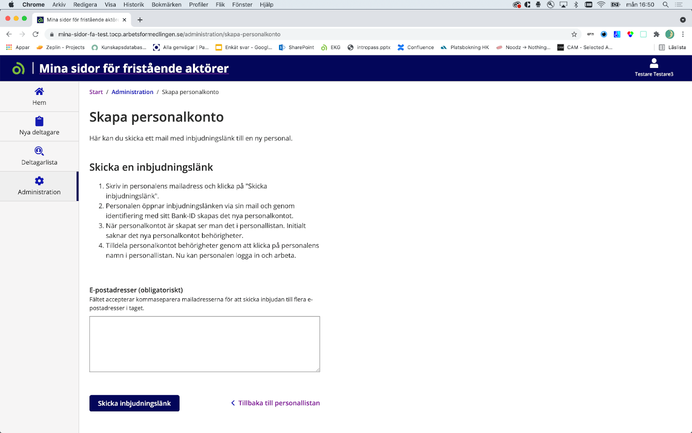
Lägga till behörigheter
Genom att bocka för ”Visa endast personer utan behörigheter” får du fram de personalkonton som saknar
behörigheter.
För att lägga till behörigheter klicka på berörd person i listan.
Klicka sedan på ”Redigera”.
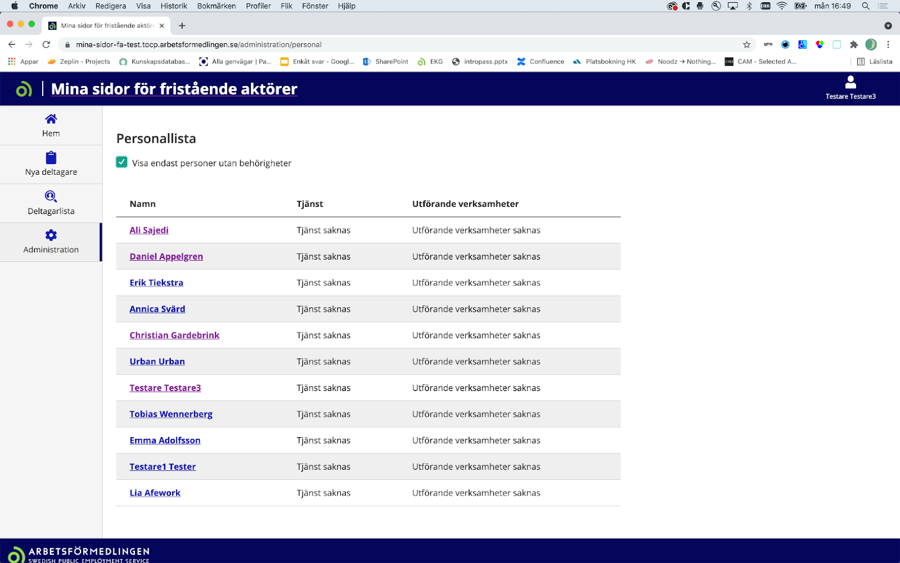
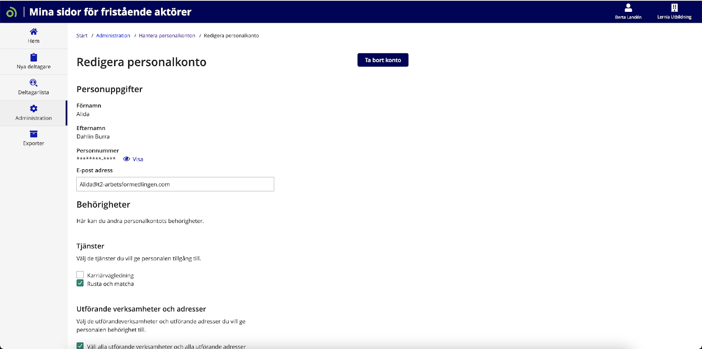
Tjänst, utförande verksamhet och adresser
Välj den tjänst du vill ge personen tillgång till.
När du valt tjänst ser du de utförande verksamheter inom din organisation som finns registrerade för
den
valda tjänsten.
När du ställer markören på en utförande verksamhet får du fram de adresser verksamheten finns på.
Välj de utförande verksamheter och adresser du vill ge personen behörighet till.
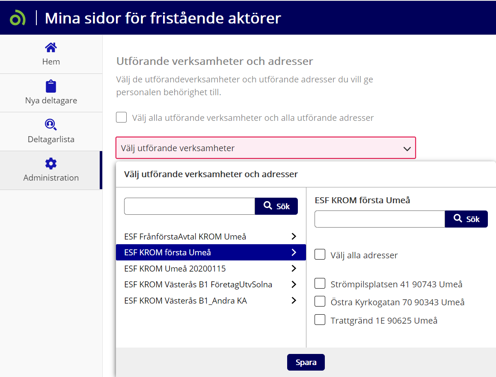
Roller
Under ”Roller” väljer du de behörigheter personen behöver i systemet för att kunna utföra sina
arbetsuppgifter.
Det finns tre olika behörigheter indelade efter vilka uppgifter personen ska utföra i ”Mina sidor
för
fristående aktörer”:
Administrera behörigheter
Ta emot (och fördela) nya deltagare
Rapportering, planering och information om deltagare
De olika behörigheterna går att kombinera med varandra och en person kan ha en, två eller tre olika
behörigheter.
Det är du som leverantör som bestämmer vilka behörigheter dina olika medarbetare behöver.
Du hittar en utförligare beskrivning av behörigheterna i avsnittet ”Behörigheter” i slutet av det
här
dokumentet.
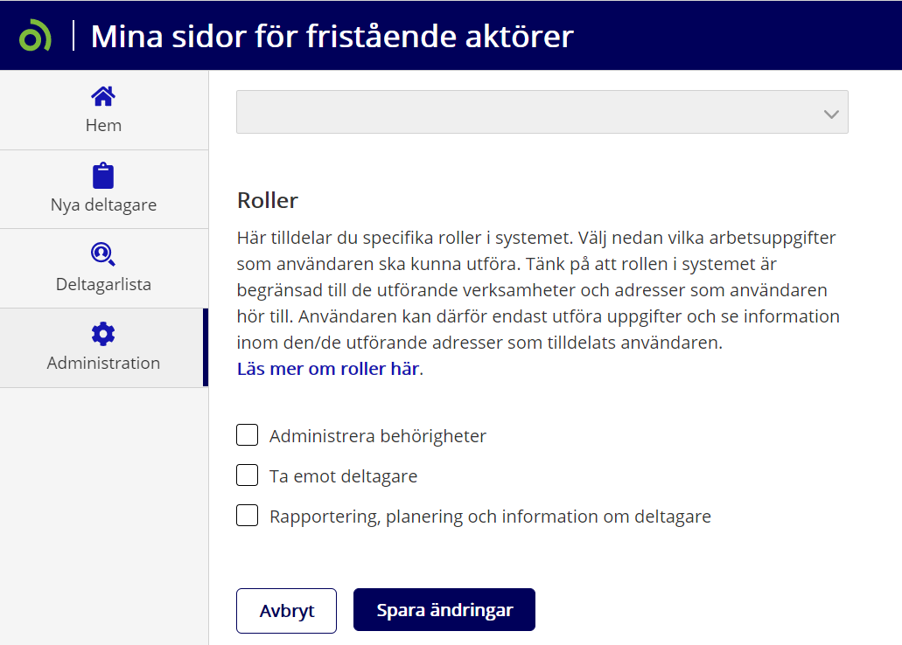
Personalkontot har uppdaterats
Nu är personalkontot uppdaterat med de behörigheter du har valt.
Scrolla längst ner på sidan och klicka på ”Tillbaka till personallistan” för att komma till
personallistan igen.
Nu kan du fortsätta lägga till behörigheter till personalkonton.
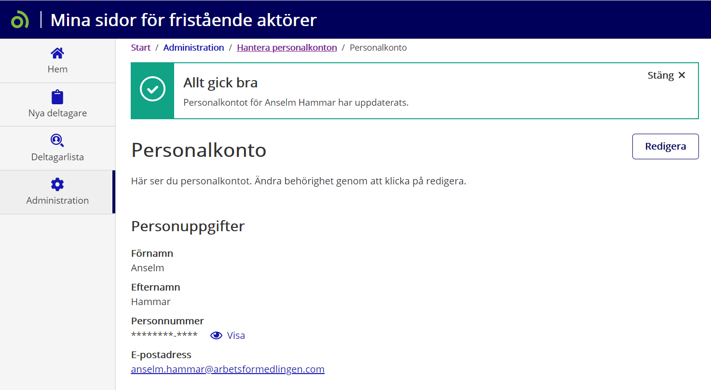
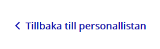
Så här gör du för att registrera dig när du fått en inbjudan
När personen som administrerar behörigheter i din organisation bjuder in dig som användare av ”Mina
sidor för fristående aktörer” skickas en inbjudan till din e-post.
Klicka på länken i inbjudan för att börja registreringen av ditt konto.
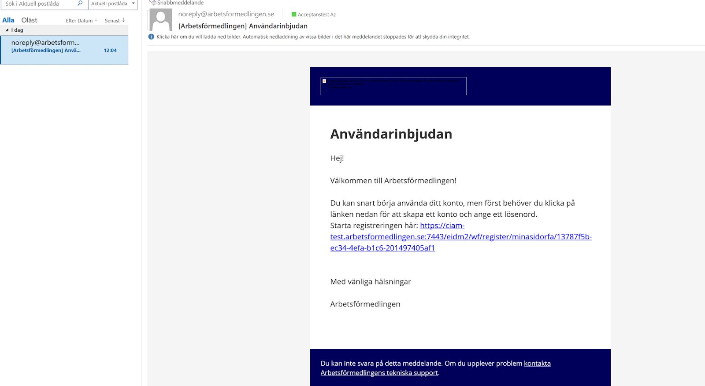
Legitimering med BankID
Du legitimerar dig med BankID. Välj om du vill använda Mobilt BankID eller BankID på fil.
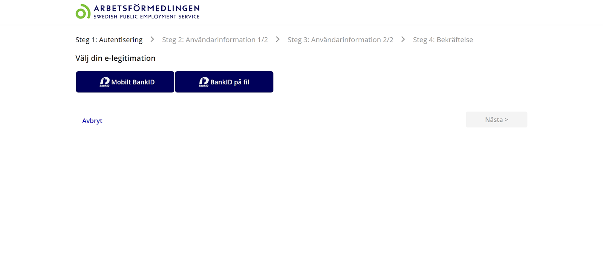
Bekräfta användarnamn
Kontrollera att uppgifterna stämmer, klicka sen på knappen ”Bekräfta Användarnamn (epost)”
En bekräftelsekod skickas till dig med e-post.
Hämta bekräftelsekoden i din e-post och skriv in den i rutan som kommer upp. Klicka sen på
”Kontrollera
kod”.
För att komma vidare efter att du bekräftat din e-postadress klicka på knappen ”Nästa.”
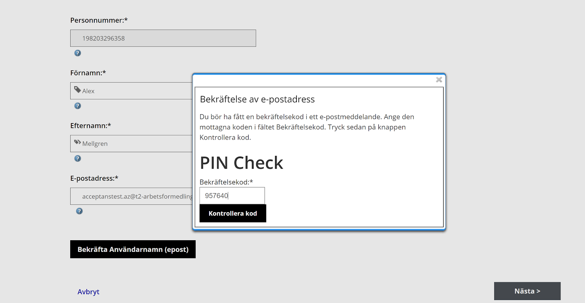
Tekniskt namn
Nu kommer du till en sida som visar ”Tekniskt namn”. Det är ett ID-nummer som ”Mina sidor för
fristående
aktörer” använder för att styra informationen rätt i systemet. Du behöver inte göra något med
numret.
För att komma vidare klicka på ”Nästa”.
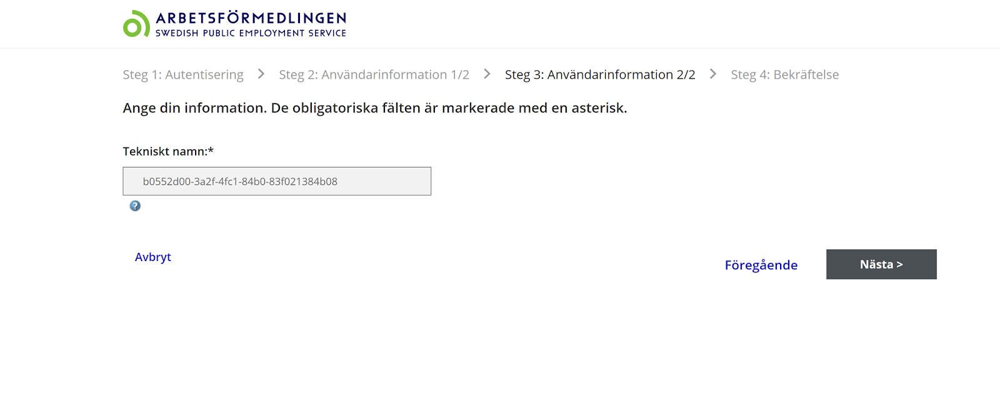
Personlig information
Här ser du användarinformationen för ditt konto i ”Mina sidor för fristående aktörer”.
Klicka på knappen ”Bekräfta” för att gå vidare.
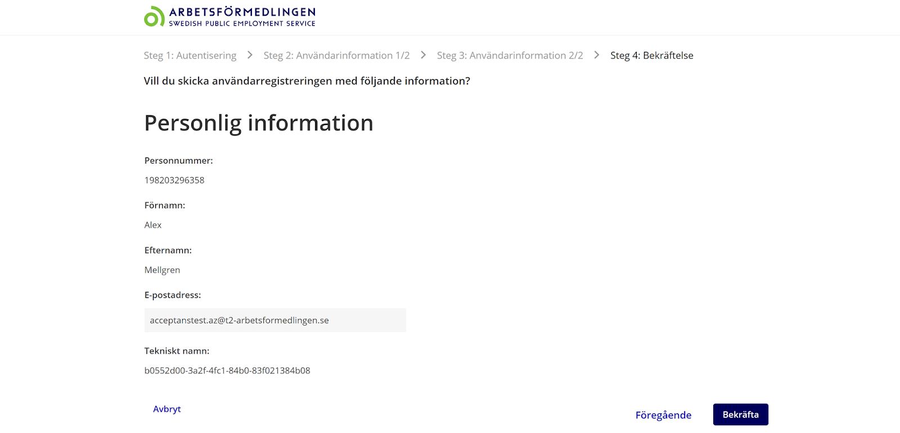
Användarregisteringen har godkänts
Nu är du färdig med registreringen av ditt konto i ”Mina sidor för fristående aktörer och du får en
bekräftelse med e-post. Personen som administrerar behörigheter i din organisation kan nu lägga till
de
behörigheter du behöver i ditt arbete.
Du kommer till ”Mina sidor för fristående aktörer” via länken leverantorer.arbetsformedlingen.se. Du
använder BankID för att logga in.
Viktigt - för att du ska kunna ta bort en handledare behöver du först flytta över handledarens
deltagare
till en annan handledare.
Du kan se om handledare har deltagare på sig genom att;
Välja ”deltagarlista” och välja den handledare du vill se.
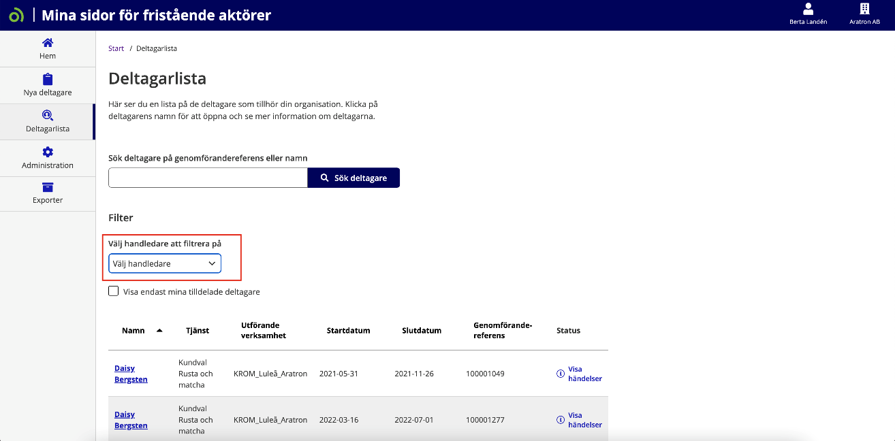
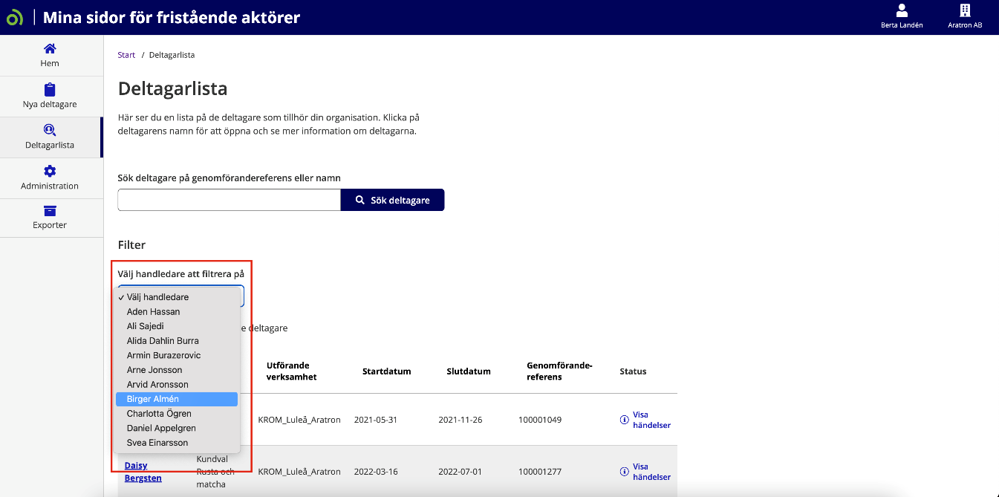
Byt handledare
För att ändra handledare går du in på varje deltagare aktuell handledare har och klickar på ”byt
handledare”. Du väljer den handledare deltagaren ska byta till och klickar på ”spara handledare”.
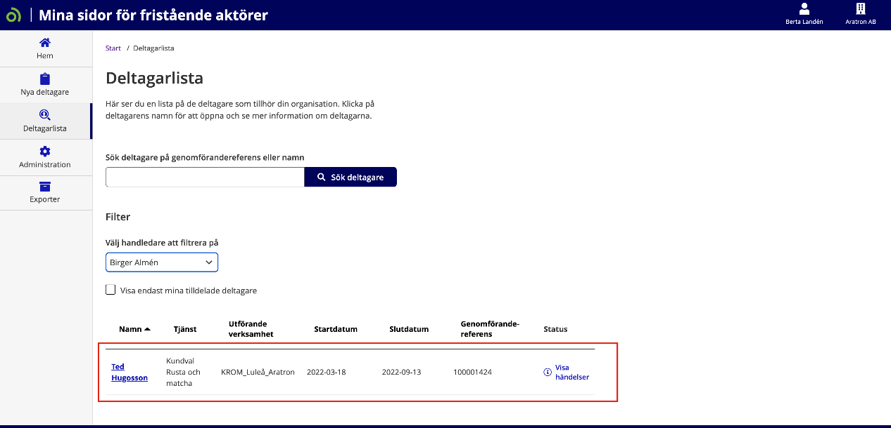
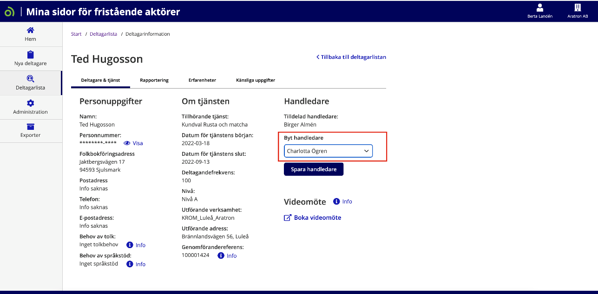
Ta bort handledare
För att ta bort en handledare klicka på ”administration” och ”hantera personalkonton” klicka på
handledarens konto genom att klicka på namnet. Klicka på ”redigera konto” och ”ta bort konto”.
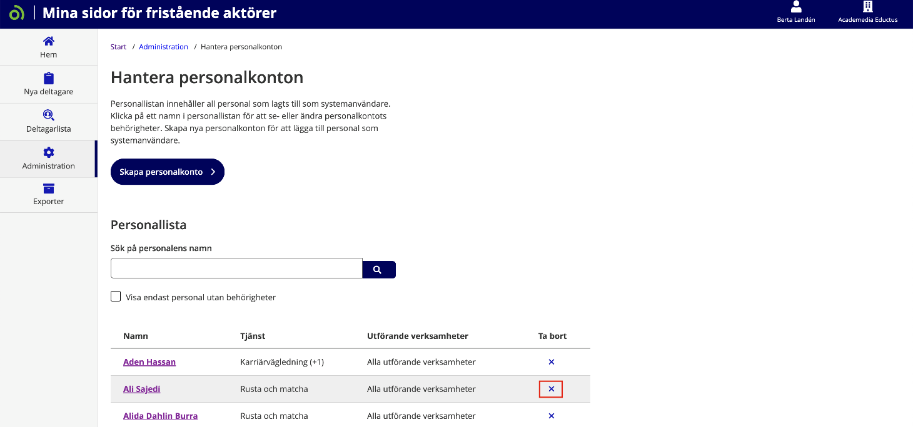
Du kan även ta bort en handledare genom att gå in via ”administration” och ”hantera personalkonton”,
du
söker fram den handledaren du vill ta bort, klickar på ”redigera” sedan klickar du på ”ta bort
konto”.
Klicka på fliken ”Nya deltagare” för att se alla nya deltagare som har kommit in för de utförande
verksamheter du har behörighet till.
Det är endast du som har behörigheten ”Ta emot (och fördela) nya deltagare” som ser fliken ”Nya
deltagare”. Har du inte den behörigheten ser du inte heller fliken.
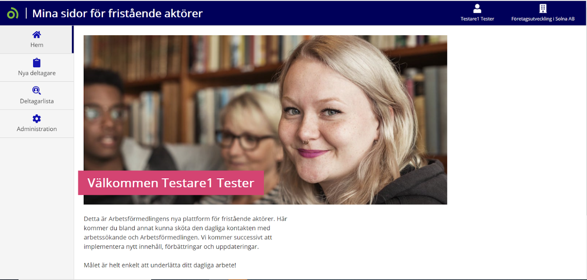
Välj deltagare att tilldela
Här ser du alla nya deltagare för de utförande verksamheter och adresser du har behörighet till.
Du kan filtrera resultatet efter tjänst, utförande verksamhet och kommun. Du kan välja att visa
deltagare för en eller flera utförande verksamheter och kommuner samtidigt.
För att tilldela deltagare till en handledare så väljer du deltagare genom att sätta en bock i rutan
”välj deltagare”. Du kan välja att tilldela en eller flera deltagare samtidigt till en handledare.
Du
kan också välja att tilldela alla deltagare i listan genom att bocka för rutan ”Välj alla deltagare.
För att gå vidare klicka på knappen ”Nästa”.
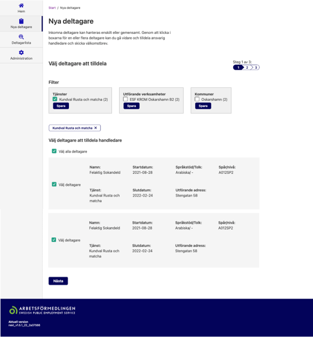
Tilldela handledare
Välj vilken handledare i listan du vill tilldela till de valda deltagarna.
När du har valt handledare i listan ser du med en gång namnet på handledaren under rubriken ”Vald
handledare” i det gråa deltagarfältet. Du kan endast tilldela deltagare till handledare som har
behörigheten ”Rapportering, planering och information om deltagare”. Det är endast de handledarna du
ser
i listan.
Kontrollera att du valt rätt handledare, klicka sedan på knappen ”Tilldela”
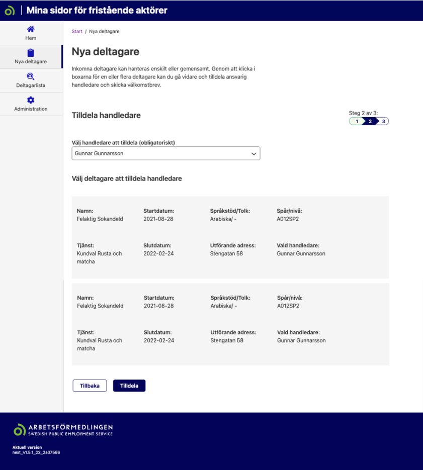
Bekräfta tilldelning
Klicka på knappen ”Bekräfta tilldelning” för att bekräfta tilldelningen till handledaren.
Nu är tilldelningen färdig och du kan gå tillbaka till listan med nya deltagare genom att klicka på
knappen ”Tillbaka till nya deltagare”.
För att få fram dina tilldelade deltagare börja med att klicka på fliken ”Deltagarlista”.
Du ser då en lista med de deltagare som tillhör din organisation. För att se enbart dina deltagare
bockar du för rutan ”Visa endast mina tilldelade deltagare”.
Du kan också söka fram en deltagare genom att söka på genomförandereferens i rutan ”Sök deltagare på
genomförandereferens”
Du kan se de senaste händelserna för en deltagare genom att klicka på ”Visa händelser”
Klicka på en deltagares namn i listan för att se den information som finns om deltagaren.
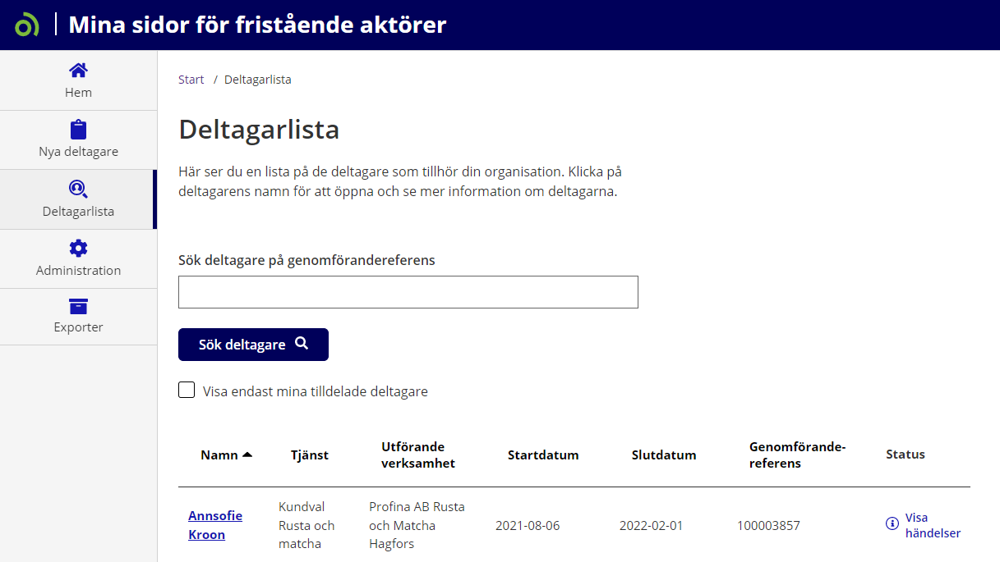
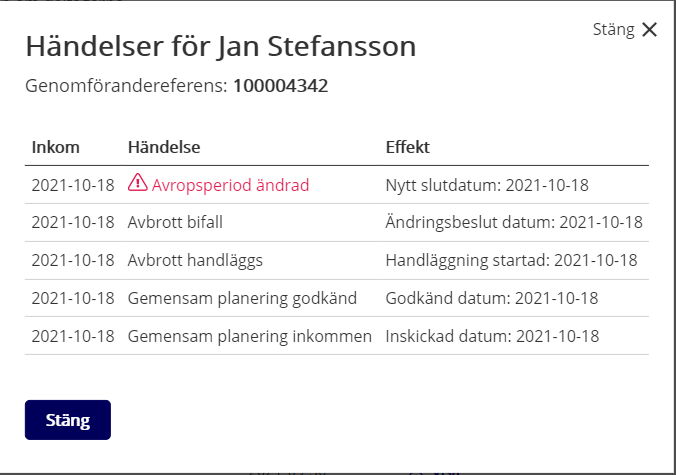
Deltagarinformation - Deltagare & tjänst
Under fliken ”Deltagare & tjänst” hittar du information om deltagaren och tjänsten. Här ser du också
om
deltagaren har behov av språkstöd och i så fall på vilket språk. Deltagarens personnummer ligger
dolt på
sidan. För att få fram personnumret klicka på ”Visa” bredvid det lilla ögat. Du ser också vilken
handledare som ansvarar för deltagaren. För att byta handledare väljer du ny handledare i listan
under
rubriken ”Byt handledare”. Klicka sedan på knappen ”Spara handledare” Du kan endast välja att byta
till
en handledare med behörigheten ”Rapportering, planering och information om deltagare”. Du ser därför
endast de handledarna i listan.
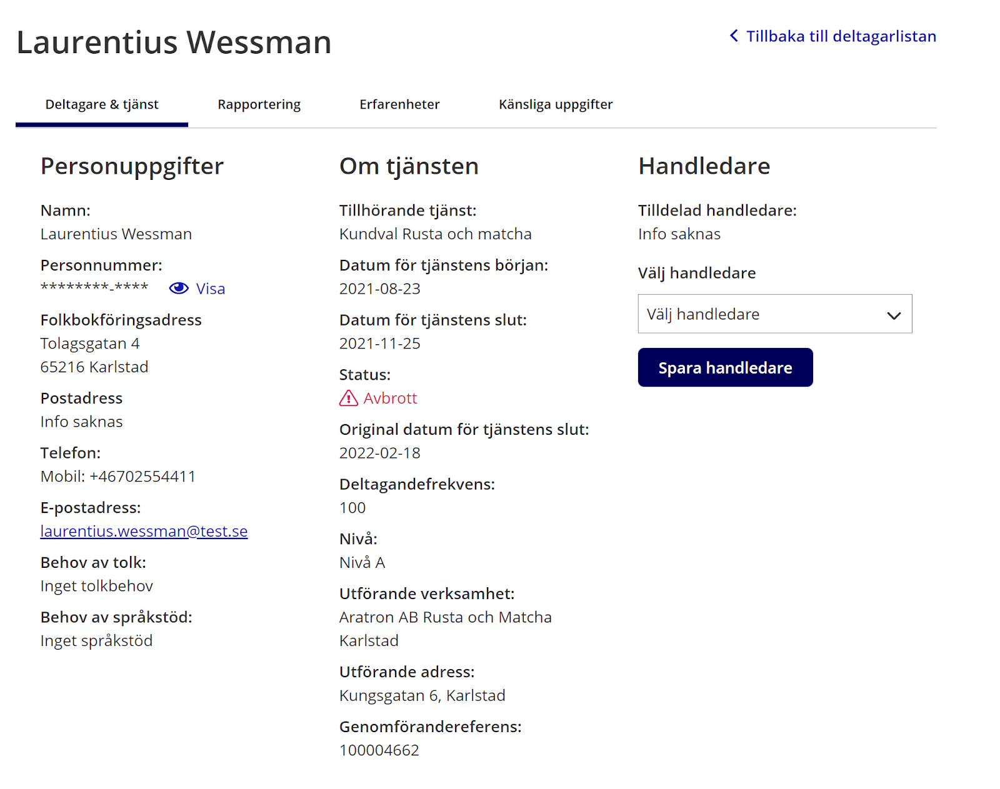
Deltagare & tjänst - Genomförandereferens, avbrott och videomöte
Under fliken ”Deltagare & tjänst” hittar du också ”Genomförandereferens”, vilket är det
referensnummer
du ska använda dig av i kontakten med Arbetsförmedlingen. Du kan också använda
genomförande-referensen
till att leta fram ordrar i Leverantörsportalen. Under rubriken ”Om tjänsten” ser du också
information
om det gjorts ett avbrott för deltagaren. Här hittar du också en länk till videomöte som är
Arbetsförmedlingens digitala tjänst för videomöte där du kan genomföra säkrare digitala möten med
dina
deltagare. Länken tar dig till en extern webbplats där du loggar in med BankID.
På Arbetsförmedlingens hemsida hittar du instruktioner om hur du använder videomöten
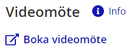
Deltagarinformation - Erfarenheter
Under fliken ”Erfarenheter” hittar du information om deltagarens arbetslivserfarenhet och
utbildning. Du
ser också om deltagaren har körkort och tillgång till bil.
Informationen hämtas från Arbetsförmedlingens system.
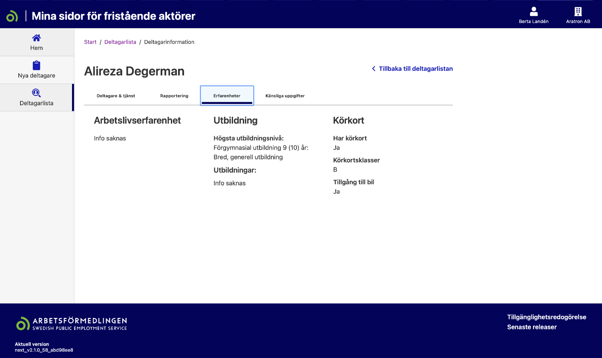
Deltagarinformation - Rapportering
Under fliken ”Rapportering” hittar du en lista över de olika rapporter du har skickat in till
Arbetsförmedlingen för deltagaren.
Under rubriken status ser du vilken status rapporten har och om den är mottagen eller godkänd.
Det är också under fliken rapportering som du skapar nya rapporter.
Information om hur du skapar och skickar rapporter hittar du i nästa avsnitt.
För att skapa en rapport gå in under fliken ”Rapportering” i deltagarinformationen.
Välj ”Gemensam planering”
Gemensam planering
Välj först om deltagaren ska delta på distans eller inte.
Välj sedan de aktiviteter som deltagaren ska genomföra genom att bocka för dem i listan.
Klicka på knappen ”Förhandsgranska” för att komma vidare till nästa steg.
Viktigt!
En gemensam planering måste alltid innehålla de två obligatoriska aktiviteterna och minst en
frivillig
aktivitet.
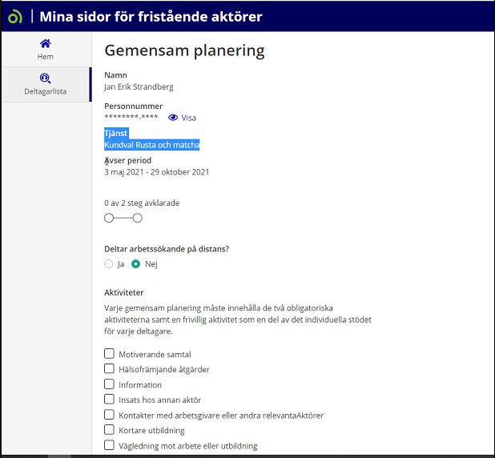
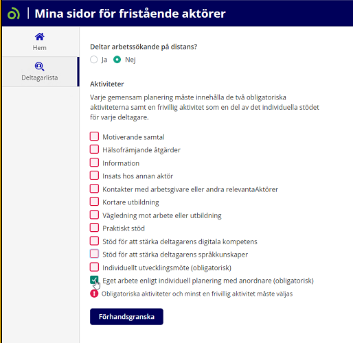
Om du inte fyller i aktiviteterna korrekt
Om du missar att välja de två obligatoriska aktiviteterna och minst en valfri aktivitet så kommer du
inte vidare i systemet.
Du får då fram en varningstext under listan av aktiviteter när du klickar på knappen
”förhandsgranska”.
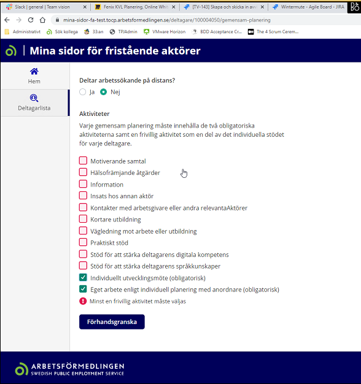
Skicka in gemensam planering
Kontrollera att den gemensamma planeringen stämmer och att du fått med de aktiviteter ni har kommit
överens om att deltagaren ska genomföra.
För att skicka in planeringen till Arbetsförmedlingen klicka på knappen ”Skicka in”
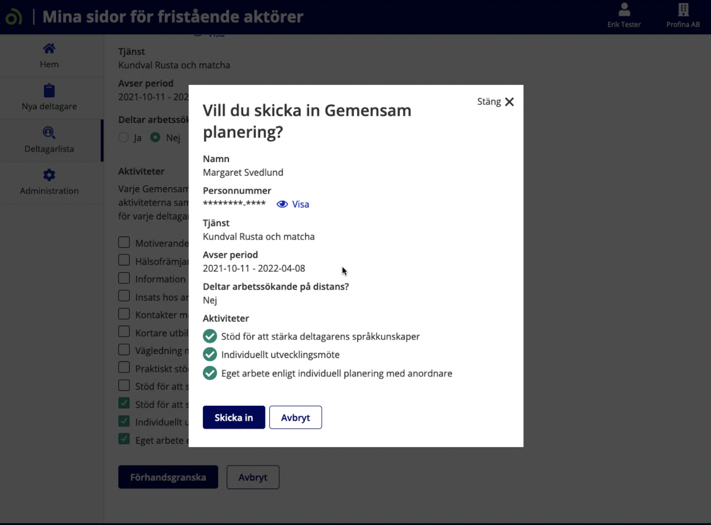
Gemensam planering inskickad
Nu är den gemensamma planeringen färdig och inskickad till Arbetsförmedlingen.
I listan över rapporter under deltagarinformation ser du sen när den har blivit godkänd.
Klicka på ”Tillbaka till deltagaren” för att komma tillbaka till deltagarinformationen.
Gå in under fliken ”Rapportering” i deltagarinformationen. Välj sedan ”Avvikelserapport (Frånvaro)”
eller ”
Avvikelserapport (Avvikelse)” beroende på vilken typ av avvikelse du vill rapportera
Frånvaro:
När deltagaren varit frånvarande på grund av sjukdom, vård av barn, arbete, utbildning, annan känd
orsak, eller okänd orsak.
Känd orsak kan vara till exempel läkar- eller tandläkarbesök, familjeangelägenhet, möte med
myndighet
eller annan känd orsak.
Avvikelse:
När deltagaren tackat nej till insats eller aktivitet, tackat nej till erbjudet arbete, inte kan
tillgodogöra sig programmet, misskött sig eller stört verksamheten, eller sett till att erbjudet
arbete
inte blivit av.
Frånvaro
Välj orsak till frånvaron i listan under rubriken ”Orsak till frånvaro”
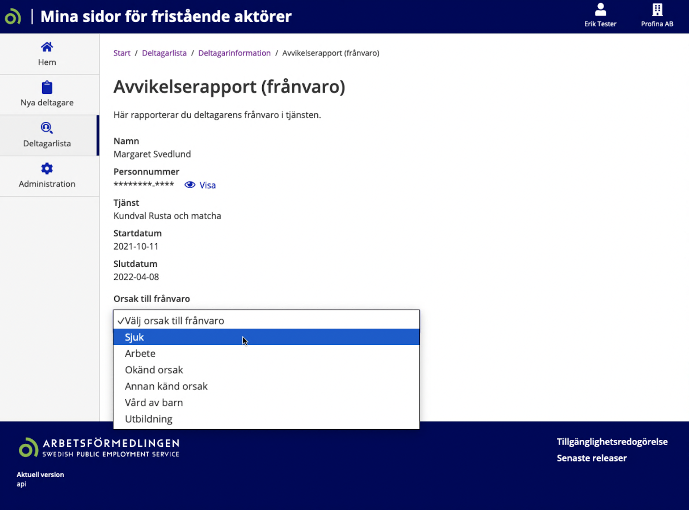
Annan känd orsak
När du valt ”Annan känd orsak” ska du sedan välja frånvaro-orsak i listan under rubriken ”Välj känd
orsak”.
Om du väljer ”Annan orsak” så behöver du beskriva orsaken till frånvaron i fritextfältet under
rubriken
”Beskriv
frånvaro”.
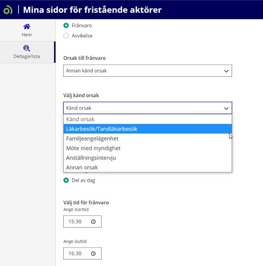
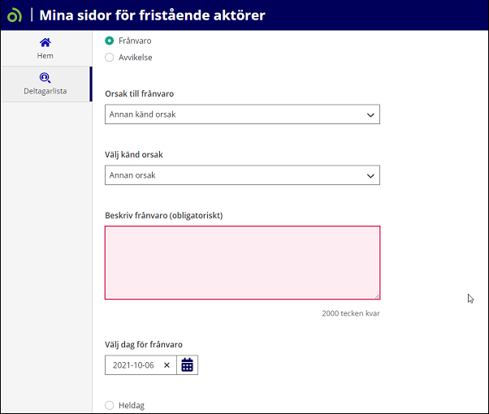
Välj dag för frånvaron
Välj vilken dag deltagaren har varit frånvarande. Ange sedan om frånvaron gäller heldag eller del av
dag.
Lägg in start- och sluttid för när deltagaren skulle ha varit närvarande. Gäller frånvaron endast en
del
av
dagen så
lägger du även in start- och sluttid för frånvaron.
Klicka på ”Förhandsgranska” för att komma vidare.
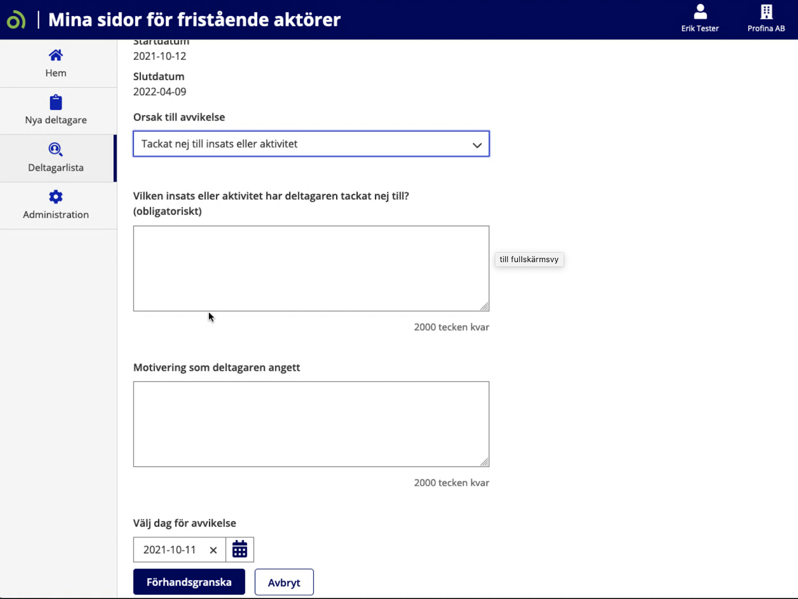
Skicka in Avvikelserapport
Kontrollera att informationen i avvikelserapporten stämmer. För att skicka in rapporten till
Arbetsförmedlingen
klicka
på knappen ”Skicka in”
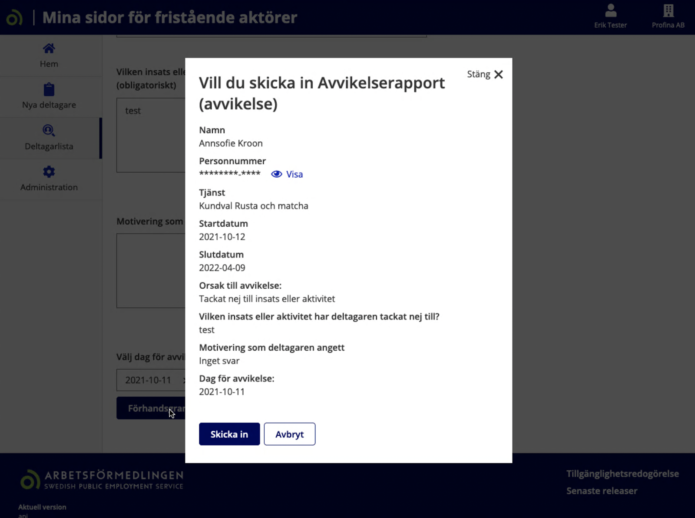
Rätta fel i en inskickad avvikelserapport (frånvaro)
För att rätta en felaktig avvikelserapport om frånvaro så ska du skicka in en ny avvikelserapport.
Välj ”Annan orsak” i listan under rubriken ”Orsak till frånvaro”. I fritextfältet skriver du sedan
RÄTTELSE
eller
KOMPLETTERING och det datum då den felaktiga rapporten skickades in. T.ex. RÄTTELSE 211117.
Skriv sedan in den korrekta informationen i fritextfältet och ange datum för frånvaron.
Klicka sedan på ”Förhandsgranska för att komma vidare”.
Avvikelse
Välj orsak till avvikelsen under rubriken ”Orsak till avvikelse”.
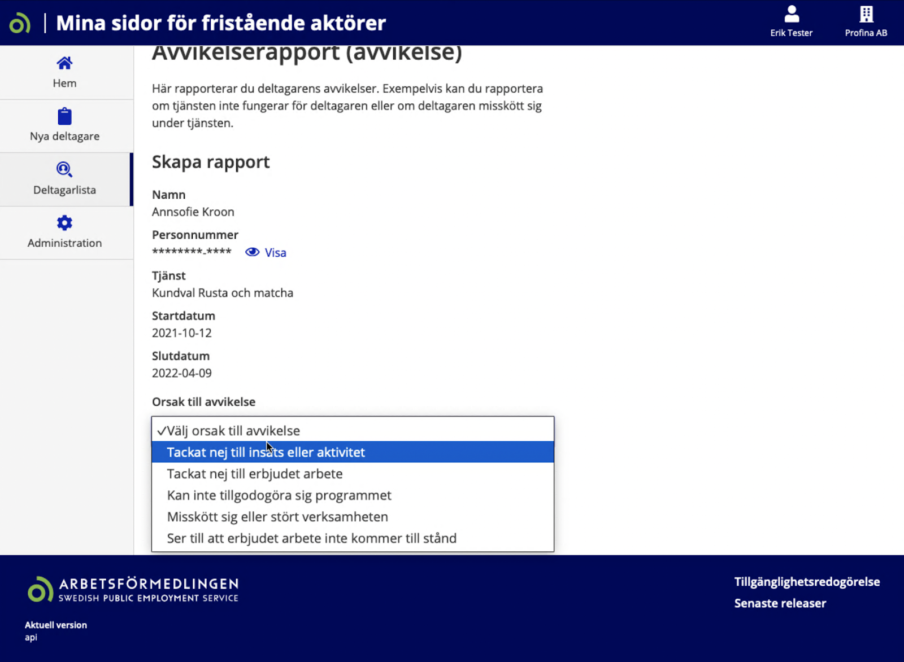
Tackat nej till erbjudet arbete, insats eller aktivitet
Om avvikelserapporten gäller en deltagare som har tackat nej till ett arbete eller till en insats
eller
aktivitet
ska du
först ange vilket arbete eller insats/aktivitet det rör sig om.
Ange sedan den motivering deltagaren har uppgett till att hen tackat nej.
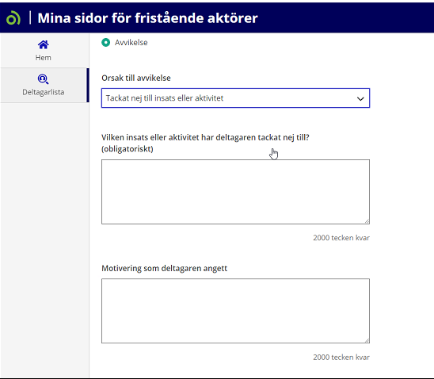
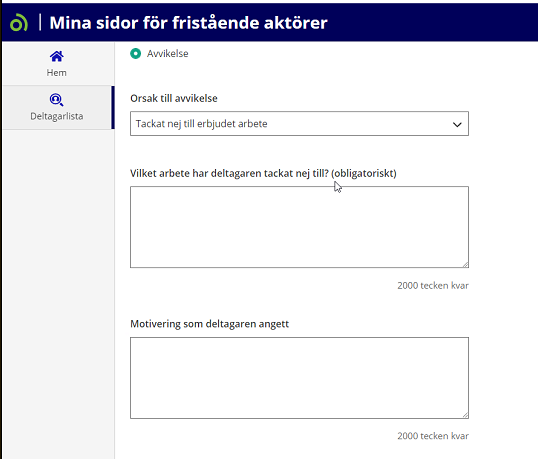
Kan inte tillgodogöra sig eller misskötsel
Gäller avvikelserapporten en deltagare som inte kan tillgodogöra sig programmet eller en deltagare
som
misskött
sig
så
ska du först beskriva problemet.
Sen ska du beskriva vad ni har gjort för att stötta deltagaren, hur ni har försökt anpassa
programmet
eller
vad
ni
har
gjort för att lösa problemet.
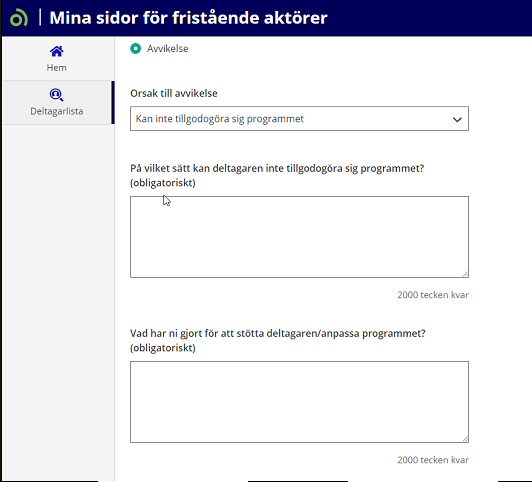
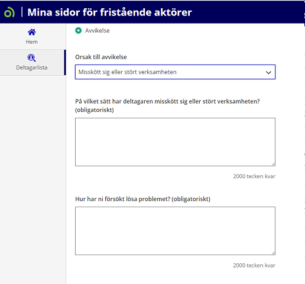
Ser till att erbjudet arbete inte kommer till stånd
Om deltagaren har blivit erbjuden ett arbete och har agerat så att arbetet inte blir av, så
beskriver du
i
fritextfältet
på vilket sätt hen har agerat för att inte få arbetet.
Ange vilken dag avvikelsen gäller för. Du kan välja ett datum bakåt i tiden men inte ett framåt i
tiden.
Du ska alltid rapportera en avvikelse så snart du får kännedom om den. Eftersom du rapporterar
avvikelsen
det
datum
då
du får reda på den behöver du inte ange ”kännedomsdatum” i ”Mina sidor för fristående aktörer”.
Klicka på ”Förhandsgranska” för att gå vidare.
Skicka in avvikelserapport
Kontrollera att informationen i avvikelserapporten stämmer.
För att skicka in planeringen till Arbetsförmedlingen klicka på ”Skicka in”.
Du behöver sen bekräfta en gång till genom att klicka på ”Skicka” i rutan som kommer upp.
Avvikelserapport inskickad
Din avvikelserapport är nu inskickad till Arbetsförmedlingen och du kan då tillbaka till
deltagarinformationen
genom
att
klicka på
”Tillbaka till deltagaren”.
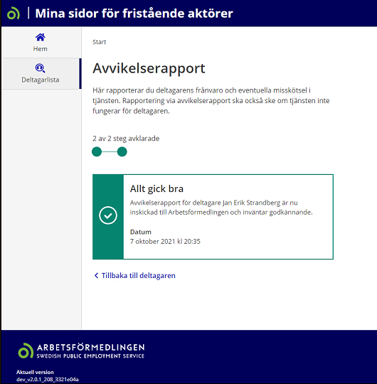
Rätta fel i inskickad avvikelserapport (avvikelse)
För att rätta en felaktig avvikelserapport om avvikelse ska du skicka in en ny avvikelserapport.
Välj samma orsak till avvikelse som du gjorde på den felaktiga rapporten. I fritextfältet skriver du
sedan
RÄTTELSE
eller KOMPLETTERING och det datum då du skickade in den felaktiga avvikelserapporten
T. ex RÄTTELSE 211117.
Fyll sedan i den korrekta informationen i fritextfälten.
Ange datum för när avvikelsen inträffade och klicka på ”Förhandsgranska” för att granska och skicka
in
rättelsen.
För att skapa en Periodisk redovisning klicka på knappen ”Periodisk redovisning” under fliken
”Rapportering”.
Skapa periodisk redovisning
Välj den period redovisningen gäller för i listan under rubriken ”Period”.
Svara sedan ja eller nej på frågorna om deltagaren har fått språkstöd under perioden och om ni har
lämnat
några
förslag
till på arbeten att söka till deltagaren.
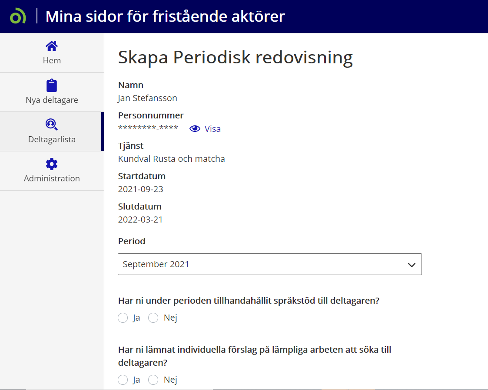
Välj aktiviteter
Välj de aktiviteter deltagaren har genomfört under den aktuella perioden.
Du kan endast välja aktiviteter som finns med i den inskickade gemensamma planeringen för
deltagaren.
Vill
du
lägga
till
nya aktiviteter behöver du först uppdatera den gemensamma planeringen innan du kan redovisa
aktiviteten
i
periodisk
redovisning.
Ange hur mycket tid deltagaren har lagt på varje aktivitet.
Klicka på knappen ”Förhandsgranska” för att gå vidare och förhandsgranska redovisningen.
Skicka in periodisk redovisning
Kontrollera att du fyllt i redovisningen korrekt och klicka på knappen ”Skicka in” för att skicka in
den
till
Arbetsförmedlingen.
Se innehållet i en redan inskickad rapport
För att se innehållet i en rapport du har skickat in till Arbetsförmedlingen klicka på rapportens
namn i
listan
”Inskickade rapporter”. Du ser då en sammanställning över de uppgifter du har skickat in i vald
rapport.
Informativ rapport
Informativ rapport
För att skapa en informativ rapport välj ”Informativ rapport” under fliken ”Rapportering” i
deltagarinformationen.
Skapa informativ rapport
Välj vad ärendet gäller i listan under rubriken ”Vad gäller ärendet”.
Skriv sedan vad du vill informera Arbetsförmedlingen om i fritextfältet.
Tänk på att inte skriva känsliga personuppgifter, uppgifter som handlar om hur deltagaren mår eller
uppgifter
som
rör en
person med skyddad identitet.
Skriv även dina kontaktuppgifter så att Arbetsförmedlingen kan komma i kontakt med dig om det behövs
i
ärendet.
När du är färdig klicka på knappen ”Förhandsgranska” för att förhandsgranska och sedan skicka in
rapporten.
Signal om arbete eller studier
Du behöver meddela Arbetsförmedlingen att en deltagare har fått ett jobb eller påbörjat studier. Det
gäller
oavsett
om
det är på hel - eller deltid. Det gör du genom att skicka in en ”Signal om arbete eller studier”
Ange om deltagaren ska arbeta eller studera på hel- eller deltid. Om det är en sysselsättning på
deltid
så
anger
du
omfattningen i procent.
Fyll också i startdatum för arbete eller studier. Om deltagaren ska arbeta eller studera på deltid
så
ska du
också
fylla
i omfattning i rutan som kommer fram. Om starten sker efter insatsens slut skriver du in datum när
sökande
ansökte
om
utbildningen.
Klicka på ”Förhandsvisa” för att granska rapporten innan du skickar in den.
Du kan inte skicka in ”Signal om arbete eller studier” om du redan har skickat in en
resultatredovisning
för
hantering
eller efter att en resultatredovisning har blivit godkänd av Arbetsförmedlingen.
Skicka in ”Signal om arbete eller studier”
Kontrollera att informationen stämmer och klicka sedan på knappen ”Skicka in” för att skicka in
resultatredovisningen
till Arbetsförmedlingen.
Skapa resultatredovisning
Välj om deltagaren har fått jobb eller påbörjar studier. Ange sedan om det är på hel- eller deltid.
Om
en
deltagare
fått
arbete på deltid och omfattningen motsvarar deltagarens önskade omfattning så ska du välja heltid.
Om
det är
en
sysselsättning på deltid så anger du omfattningen i procent.
Ange var deltagaren ska studera eller arbeta och fyll i startdatum. Finns ett slutdatum fyller du i
även
det,
annars
lämnar du den rutan tom.
Klicka på ”Förhandsgranska” för att kontrollera informationen i resultatredovisningen innan du
skickar
in
den
till
Arbetsförmedlingen.
För tillfället kan du inte skicka in bilaga via systemet. Du behöver
därför skicka in de betyg och intyg som behövs för att verifiera resultatredovisningen per post
till:
Arbetsförmedlingen
FE 8051
10767 Stockholm
För att skapa en slutredovisning välj ”Slutredovisning” under fliken ”Rapportering” på
deltagarkortet.
Slutredovisning steg 1
I slutredovisningen ska du beskriva de aktiviteter deltagaren har genomfört, vad som har fungerat
eller
inte
fungerat
och ett förslag på lämpligt nästa steg för deltagaren.
Välj vilken huvudsaklig sysselsättning deltagaren har för tillfället.
Beroende på vilket val du gör så kommer olika fält fram. Alla fritextfält i slutredovisningen är
obligatoriska.
Om
du
inte fyller i dem så kommer du inte vidare.
Slutredovisning - Huvudsaklig sysselsättning arbete
Välj yrkesområde i listan under rubriken ”Yrkesområde”
Välj sedan Yrkesgrupp i listan som kommer fram.
Ange anställningsform och i vilken omfattning deltagaren jobbar.
Klicka på knappen ”vidare till steg 2” för att komma vidare och redovisa genomförda aktiviteter.
Välj utbildningsnivå under rubriken ”Utbildningsnivå”
Välj sedan hur lång utbildningen är under rubriken ”Utbildningens längd”
I fritextfältet anger du vilken inriktning utbildningen har.
Klicka på knappen ”vidare till steg 2” för att komma vidare och redovisa genomförda aktiviteter.
Välj anledning till att deltagaren fortfarande är arbetssökande.
Om du väljer ”Annat” ska du fylla i orsaken i fritextfältet. Det är obligatoriskt att fylla i
orsaken.
Du
kommer
inte
vidare om du inte gör det
Klicka sedan på knappen ”Vidare till steg 2”
Slutredovisning - Huvudsaklig sysselsättning annat
Om väljer ”Annat” som deltagarens huvudsakliga sysselsättning så måste du beskriva vad annat innebär
i
fritextfältet. Om
du inte gör det kommer du inte vidare i systemet.
Klicka sedan på knappen ”Vidare till steg 2”
Slutredovisning steg 2
Beskriv i fritextfälten vad deltagaren har gjort inom de olika aktiviteterna.
Klicka sedan på ”Nästa”
Berätta om deltagarens framsteg och utveckling under tiden hen har deltagit i rusta och matcha.
Beskriv
sedan
vad
nästa
steg bör vara för deltagaren.
Klicka på ”Nästa” för att förhandsgranska slutredovisningen och sedan skicka in den..
Se status för rapporter och redovisningar
Du kan se vilken status en rapport eller redovisning har dels via deltagarlistan. Klicka på ”Visa
händelser”
så
får
du
fram en lista på händelser för deltagaren och ser där även statusen för rapporten.
Du kan också se statusen för en rapport eller redovisning under ”Inskickade rapporter” som du hittar
under
rubriken
”Rapportering” i deltagarinformationen.
Se motivering till ej godkänd slutredovisning - deltagarlistan
För att se i deltagarlistan varför en slutredovisning inte har blivit godkänd klicka först på ”Visa
händelser”
och
sedan
på ”Motivering till beslut”.
Se motivering till ej godkänd slutredovisning - Rapporter
Under fliken ”Rapportering” i deltagarinformationen finns två sätt att få fram information om varför
en
slutredovisning
inte är godkänd.
Klicka på ”Slutredovisning” under rubriken ”Typ av rapport”
Klicka på ”Motivering till beslut” under rubriken ”Motivering”
Gå in under ”Exporter” i det gråa fältet till vänster. Välj sedan vilken tidsperiod du vill
exportera
information
från.
Tiden avser de deltagare som kommit in i ”Mina sidor för fristående aktörer” under den angivna
perioden.
Om du vill få med deltagarinformation som tidigare exporterats så bockar du för ”Inkludera redan
exporterade
deltagare”.
Det gäller alla exporter som har gjorts för den utförande verksamhet och adress du är inloggad på.
Om du vill exportera till Excel så bockar du för ”Exportera i Excelformat”. Om du inte väljer att
exportera
i
Excelformat så får du informationen i DSV.
Klicka på ”Exportera deltagare” för att starta exporten.
Du kan endast exportera deltagarinformation för deltagare som är kopplade till samma utförande
verksamhet
och
adress
som
du är inloggad på.
Export till Excel
Här ser du ett exempel på hur det ser ut i Excel när du har exporterat deltagarinformation från
”Mina
sidor
för
fristående aktörer.
Under rubriken ”Sparkod” hittar du information om vilken nivå som gäller för deltagaren. Den sista
siffran
visar
om
det
är nivå A, B eller C (1 = Nivå A, 2 = Nivå B och 3 = Nivå C).
Ett personalkonto i ”Mina sidor för fristående aktörer” består av behörigheter i tre nivåer:
1. Tillhörighet till en organisation
En person kan vara anställd på en, eller flera organisationer.
2. Utförande verksamheter och adresser inom organisationen
Inom vilken del av organisationen och på vilket kontor arbetar personen?
3. Vad personen ska kunna arbeta med i systemet.
Vilken roll/behörighet behöver personen för att kunna utföra sina arbetsuppgifter i Mina sidor FA?
Här finns det tre olika behörigheter/roller:
- Administrera behörigheter
- Ta emot (och fördela) nya deltagare
- Rapportering, planering och information om deltagare
Behörighet 1:
Administrera behörigheter
Behörigheten ”Administrera behörigheter” passar personer som ska administrera behörigheter i
systemet.
Vi
rekommenderar
att endast ett fåtal personer får den här behörigheten, till exempel firmatecknare, eller någon
annan
person
som
ska
kunna administrera personalens behörigheter.
Personer med den här behörigheten får tillgång till att administrera behörigheter för alla utförande
verksamheter
inom
en organisation. Det går inte att ha behörigheten för endast en eller några få utförande
verksamheter.
Behörigheten ger tillgång till följande funktioner:
Skapa nya personalkonton
Se personallista
Se och ändra personalkonton och dess behörigheter
Ta bort personalkonton
Behörighet 2:
Ta emot (och fördela) nya deltagare
Behörigheten ”Ta emot (och fördela) nya deltagare” passar medarbetare som behöver kunna se nya
deltagare
och som ska arbeta med att tilldela nya deltagare till handledare. Behörigheten kan exempelvis
användas
av samordnande roller, handledare eller administratörer. Behörigheten gäller för de utförande
verksamheter personen har tillgång till.
Behörigheten ger tillgång till följande funktioner:
Se lista över nya deltagare
Tilldela handledare till nya deltagare
Behörighet 3:
Rapportering, planering och information om deltagare
Behörigheten ”Rapportering, planering och information om deltagare” passar medarbetare som arbetar
nära
deltagare
och
som behöver se information om deltagare, planera aktiviteter med deltagare eller hantera deltagares
rapporter.
Exempelvis handledare, coacher, studie- och yrkesvägledare och lärare. Behörigheten gäller för de
utförande
verksamheter
personen har tillgång till.
Behörigheten ger tillgång till följande funktioner:
Se lista över deltagare
Se information om deltagare
Planera aktiviteter i en gemensam planering
Skicka och se avvikelserapporter, resultatredovisningar, periodiska redovisningar, slutredovisningar
och
informativa
rapporter
Generellt om behörigheter
De olika behörigheterna går att kombinera med varandra och en person kan ha en, två eller tre olika
behörigheter.
Det är du som leverantör som bestämmer vilka behörigheter dina olika medarbetare behöver.
Förutom behörigheten ”Administrera behörigheter” som alltid gäller för alla utförande verksamheter
inomen organisation så kan en person inte kan ha olika behörigheter för olika utförande verksamheter
eller adresser. Om en person har behörigheterna ”Rapportering, planering och information om
deltagare”
och ”Ta emot nya deltagare” så gäller de behörigheterna på alla de verksamheter och adresser
personen
har tillgång till inom den organisationen.